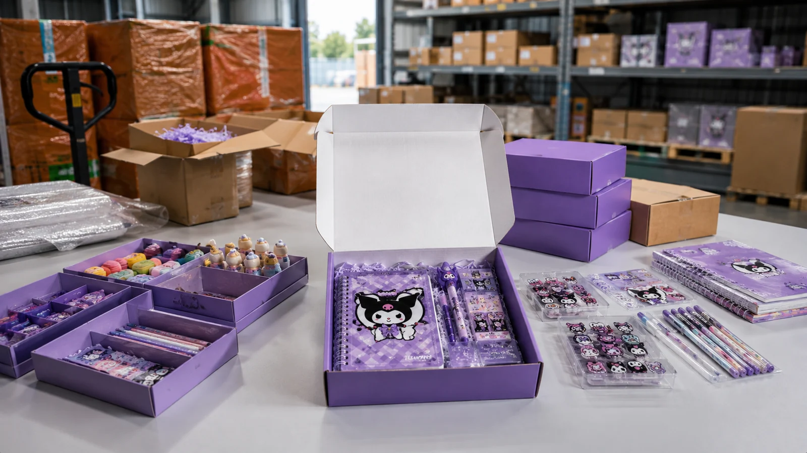
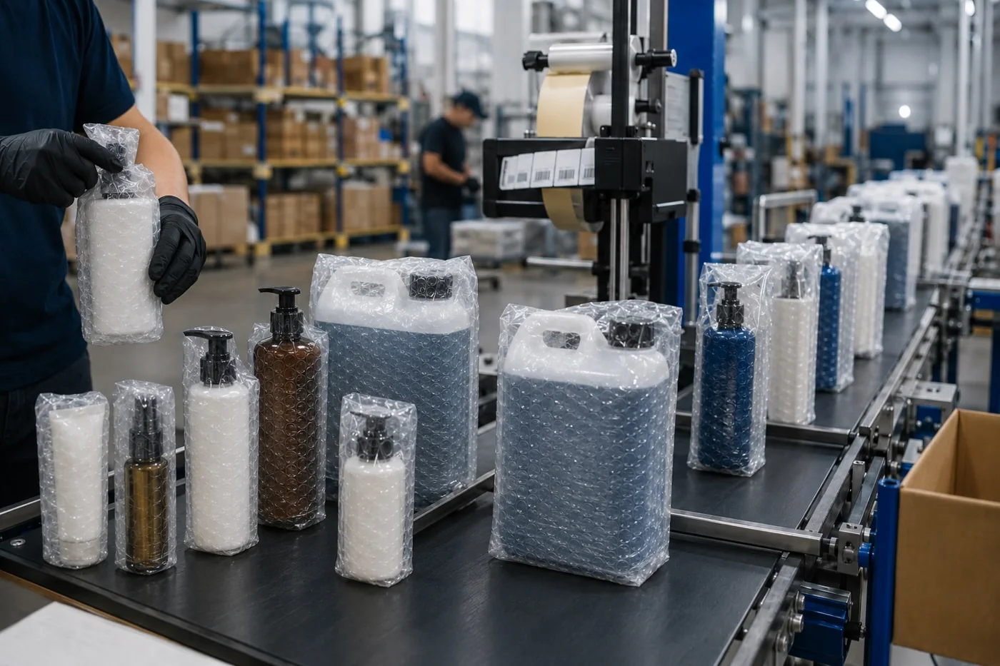
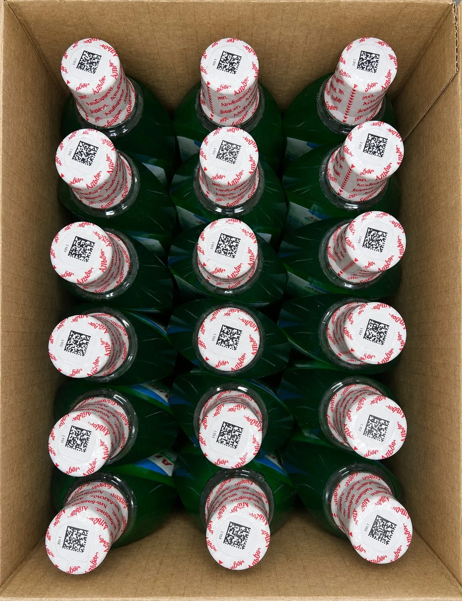

Опубликовано: 18 сентября 2026 · Восстановлено: 4 ноября 2026
Отгрузки FBL в ЛЭТУАЛЬ: подготовка косметики и парфюмерии к поставке
Преп-Центр готовит косметику, парфюмерию, средства ухода и другие подходящие товары к поставкам на склад ЛЭТУАЛЬ по модели FBL. Принимаем партию, сортируем по артикулам, проверяем внешний вид и упаковку, доупаковываем, наносим этикетки и коды маркировки, комплектуем наборы и формируем короба или паллеты.
Для ЛЭТУАЛЬ качество потребительской упаковки и маркировки особенно критично: официальный регламент содержит отдельные требования к срокам годности, штрихкодам, транспортной таре, хрупким товарам и маркируемой косметике.

Что можно передать Преп-Центру
- приемку партии и пересчет;
- сортировку по артикулам/SKU;
- проверку упаковки, флаконов, крышек и дозаторов;
- ВПП и термоусадку;
- контроль первого вскрытия/дополнительную защиту упаковки по ТЗ;
- печать и нанесение этикеток;
- печать и нанесение переданных кодов «Честного знака»;
- комплектацию подарочных и мультикомпонентных наборов;
- формирование коробов и европаллет;
- маркировку транспортных грузовых мест;
- хранение до даты поставки;
- подготовку к передаче перевозчику или доставке по индивидуальному расчету.
Что требует FBL ЛЭТУАЛЬ в 2026 году
Остаточный срок годности
На момент передачи товара на хранение официальный регламент требует не менее 11 месяцев остаточного срока годности. Информация должна быть читаема без дополнительного вскрытия упаковки.
Если срок годности или другая обязательная маркировка закрывается дополнительной упаковкой, нужно учитывать требования к ее дублированию.
Габариты и вес единицы
В базовом регламенте указано:
- максимальный вес единицы товара в потребительской упаковке — 15 кг;
- базовые максимальные габариты — 38×38×14 см;
- товар, превышающий один из этих габаритов, считается негабаритным и должен иметь подходящую заводскую упаковку для транспортировки.
Внешний вид и потребительская упаковка
Каждая единица должна иметь индивидуальную потребительскую упаковку и товарный внешний вид. Для косметики это означает, что потертая коробка, поврежденный сливер, потекший флакон или плохо читаемая этикетка могут стать проблемой еще до продажи.
Преп-Центр может проводить визуальную проверку партии до упаковки и маркировки.
Штрихкод и этикетка
Регламент ЛЭТУАЛЬ требует 1 четко читаемый уникальный GTIN EAN-13 или EAN-8 и русскоязычную информацию о товаре. Дополнительная этикетка не должна перекрывать срок годности, описание, штрихкод и другую обязательную маркировку.
Печать и наклейка обычной этикетки в Преп-Центре — от 5 ₽ за единицу.

Упаковка косметики и парфюмерии
Официальный регламент требует, чтобы упаковка каждой единицы обеспечивала сохранность товара, а при необходимости — герметичность. Упаковка должна выдерживать складскую обработку и перевозку.
Для Преп-Центра это профильная задача. В зависимости от товара можно использовать:
- ВПП для защиты флаконов и хрупких элементов;
- термоусадочную пленку для фиксации и внешнего защитного слоя;
- ПВД или дополнительную упаковку;
- транспортный короб;
- контроль вскрытия по согласованной схеме.
Для хрупкого товара регламент ЛЭТУАЛЬ прямо требует пузырчатую пленку и маркировку «Хрупкий груз» на внешней упаковке.
ВПП в Преп-Центре — от 10 ₽/л, автоматическая термоусадка — от 10 ₽/л.
Подарочные и косметические наборы
ЛЭТУАЛЬ отдельно описывает упаковку наборов и многокомпонентных товаров: она должна быть информативной и защищать комплект от вскрытия. В регламенте используется фраза вида «НАБОР из ХХ шт., НЕ ВСКРЫВАТЬ».
Преп-Центр может:
- принять компоненты;
- рассортировать их по артикулам;
- собрать контрольный образец;
- после согласования запустить всю партию;
- выполнить термоусадку или другую упаковку;
- нанести маркировку готового набора;
- сформировать транспортную поставку.
«Честный знак» для косметики и бытовой химии
ЛЭТУАЛЬ ведет отдельный актуальный раздел по обязательной маркировке. Для парфюмерно-косметической продукции, бытовой химии и товаров личной гигиены требования в 2025–2026 годах расширялись поэтапно.
Перед запуском сверяем обязательность маркировки по товарной группе и действующие правила передачи сведений в документах.
Преп-Центр печатает и наносит переданные клиентом готовые коды. Стоимость — от 7 ₽ за единицу. Можно также согласовать контроль считываемости и дублирование маркировки на внешний слой упаковки, если это допустимо для конкретного товара.
Короба и паллеты FBL
Для поставок ЛЭТУАЛЬ важна не только упаковка единицы, но и транспортная партия.
На дату подготовки страницы официальный регламент устанавливает, в частности:
- если передается более 10 коробов или более 1 м³ товара, поставка должна быть на палете;
- используется стандартная европаллета 120×80 см;
- максимальный вес товара на палете — 600 кг;
- максимальная высота палеты с товаром — 170 см;
- максимальный вес 1 транспортного короба — 15 кг брутто;
- в сборном коробе допускается не более 5 артикулов;
- короба на палете фиксируются стретч-пленкой минимум в 3 слоя;
- каждый короб и паллета маркируются по правилам поставки.
Преп-Центр может сформировать короба, паллетировать товар и подготовить маркировочные листы по данным клиента.
Базовые цены:
- короб 60×40×40 с сортировкой и отгрузочным ШК — от 150 ₽;
- маркировка готового короба — от 60 ₽;
- паллетирование — от 400 ₽;
- европаллет 120×80 — от 500 ₽.
Доставка FBL в ЛЭТУАЛЬ
Подготовленную поставку можно забрать своим транспортом, передать перевозчику или заказать доставку Преп-Центра на центральный склад ЛЭТУАЛЬ.
Центральный склад FBL
Москва, пос. Рязановское, пос. Знамя Октября, домовладение 51, корп. 5; для навигатора — 51/5.
Приемка по будням с 09:00 до 17:30. Дату и время подтверждаем по созданной FBL-поставке и доступному окну.
Паллеты: 4000 ₽ за первый, 3100 ₽ за следующий. Короба: от 2000 ₽ за 4, далее 500 ₽.
Отдельная машина
Москва и Московская область. До 20 паллет и 20 тонн — 35000 ₽; возможно до 33 паллет. Каждый паллет сверх базового объема — 1500 ₽. Ожидание до 6 часов бесплатно, далее 1000 ₽/час.
Данные водителя и автомобиля заранее вносят в FBL для оформления пропуска. Все цены без НДС. Перед выездом подтверждаем склад, слот и стоимость.
Почему Преп-Центр подходит под косметику и парфюмерию
Здесь часто нужно несколько операций на одной единице: проверить флакон, защитить дозатор, упаковать, нанести КИЗ, наклеить информационную этикетку, собрать набор и затем сформировать транспортную поставку.
Преп-Центр уже работает с косметикой, шампунями и гелями, ополаскивателями, наборами и другими товарами во флаконах. На складе есть ВПП, автоматическая термоусадочная линия, маркировка и комплектация.
Реальные примеры:
- 8 400 единиц профессиональной косметики, 14 SKU — 2 дня;
- 3 186 ополаскивателей с ВПП и дублированием КИЗ — 2 дня;
- 2 393 подарочных набора автохимии — 2 дня;
- 23 500 шампуней и гелей — крупная поточная обработка.
Эти примеры показывают складские операции с косметикой, жидкими товарами и наборами.
Стоимость подготовки FBL
Базовые операции:
- приемка — от 5 ₽/ед.;
- сортировка — от 5 ₽/ед.;
- визуальная проверка — от 5 ₽/ед.;
- этикетка — от 5 ₽/ед.;
- «Честный знак» — от 7 ₽/ед.;
- ВПП — от 10 ₽/л;
- автоматическая термоусадка — от 10 ₽/л;
- комплектация и дополнительные вложения — по составу работ;
- короб/паллетирование — по действующему прайсу;
- доставка на центральный склад — от 2000 ₽ за 4 короба или от 4000 ₽ за первый паллет.
Все цены без НДС. Точный состав операций и стоимость подтвердит менеджер.
Что прислать для расчета
- фото товара и потребительской упаковки;
- перечень артикулов и количество единиц;
- срок годности партии;
- сведения о «Честном знаке» и УПД, если применимо;
- какие операции нужны;
- созданную заявку FBL или предполагаемую дату поставки;
- требования к доставке.

Частые вопросы
Что такое FBL у ЛЭТУАЛЬ?
FBL — модель поставок на склад ЛЭТУАЛЬ. Продавец формирует и привозит партию, после приемки товар хранится в складской сети маркетплейса и продается через его каналы.
Вы можете подготовить косметику с «Честным знаком»?
Да. Преп-Центр печатает и наносит переданные клиентом коды маркировки и обычные этикетки. Для конкретной товарной группы перед запуском сверяем актуальные требования ЛЭТУАЛЬ и «Честного знака».
Какой остаточный срок годности нужен?
По официальному регламенту ЛЭТУАЛЬ на дату проверки — не менее 11 месяцев при передаче товара на хранение.
Когда поставку нужно паллетировать?
В регламенте указано, что при объеме более 10 коробов или более 1 м³ товар должен быть размещен на палете. Для отдельных категорий могут быть дополнительные требования.
Можно собрать подарочные наборы?
Да. Комплектуем набор по эталону, проверяем состав, упаковываем и маркируем готовую единицу. Перед большой партией можно сделать контрольный образец.
Работаете с хрупкими флаконами?
Да. Можно использовать ВПП и дополнительную защиту. Регламент ЛЭТУАЛЬ отдельно требует пузырчатую пленку для хрупких товаров.
Вы возите поставки в ЛЭТУАЛЬ по фиксированному графику?
Доставляем на центральный склад FBL. Дату, слот, объем и стоимость подтверждаем по созданной поставке; также можно передать партию выбранному перевозчику.
Как быстро можно обработать партию косметики?
Срок зависит от количества SKU и операций. В опубликованном кейсе Преп-Центр обработал 8 400 единиц косметики за 2 дня; конфигурация другой партии может отличаться.